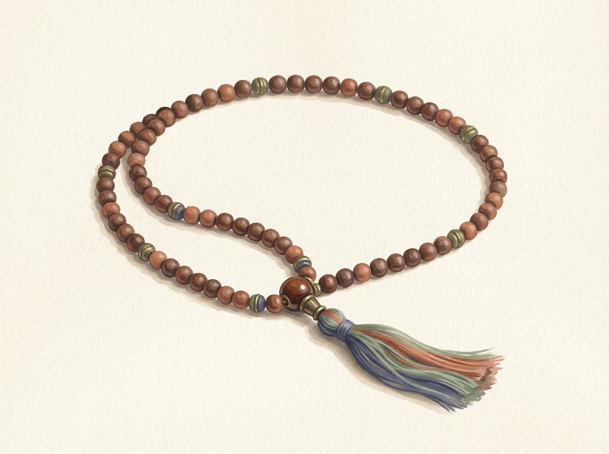

MALA · COMPTER LES MANTRAS · DIVERSES INTERPRÉTATIONS
Pourquoi le nombre 108 est-il particulier dans le bouddhisme ?
Le nombre 108 apparaît dans de nombreuses cultures religieuses d’Asie et dans des pratiques bouddhistes, sans qu’une explication unique s’impose à toutes les écoles. Il peut avoir une portée symbolique ou simplement marquer un cycle traditionnel de comptage.

MALA ET RÉCITATION
Les perles aident à compter
Une mala est un chapelet qui sert à compter les mantras, les prières ou d’autres récitations. Dans de nombreuses traditions bouddhistes, elle compte 108 grains ; il existe aussi des formats plus courts, par exemple de 54 ou 27 grains. Le nombre organise la pratique, sans mesurer à lui seul la qualité de l’attention.
POURQUOI 108 ?
Plusieurs explications, pas de formule universelle
Certaines explications bouddhistes associent le nombre 108 aux émotions perturbatrices ou aux expériences que la pratique cherche à reconnaître et à dépasser. Ailleurs, il désigne un cycle complet traditionnel de récitation. Les listes et lectures symboliques varient selon les écoles et les sources : elles ne se ramènent pas à une seule explication mathématique.
108 DANS LA PRATIQUE
Un repère utile, pas un substitut à la compréhension
Réciter un mantra 108 fois est une forme courante de pratique, non une règle universelle. Un enseignant ou une lignée peut proposer un autre compte, une autre structure ou privilégier la qualité de l’attention. Il importe de comprendre le but de la pratique plutôt que de viser seulement un nombre fixé.
La diversité des traditions bouddhistes et de leurs interprétations